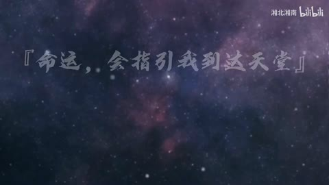

H23 / 0—2秒
不用画面,做个高燃混剪
0秒为纯黑，0.083秒起居中白色粗体标题渐亮；0–1.919秒没有切换成动作场景，主体是标题透明度变化。
迁移提问：这是需要读懂的正文、只需识别的关键词，还是作为材质的字纹？三者有没有混淆？
手法专题 / 规则、用途与取舍
把阅读顺序变成观看顺序；用字重、位置与停留表达强调、犹豫或压迫。
观点短片、歌词视觉、人物宣言、章节、情绪高潮；先决定哪些词必须读懂，哪些只是纹理。
每个字都弹跳、整句停留不足、所有文字同时争主位。严肃叙事里无理由的回弹会削弱重量。
①写清一句主信息；②拆为正文/关键词/纹理；③给每组锚点和入出时间；④先做静态版；⑤仅给承担强调的层加位移、字重或透明度。
规则版易直出；字体度量与阅读时长需检查。
基础机制已做13项原创演示，不等于本页所有复杂组合均已成片验证。
原机制演示 →H23 / 0—2秒
0秒为纯黑，0.083秒起居中白色粗体标题渐亮；0–1.919秒没有切换成动作场景，主体是标题透明度变化。
迁移提问：这是需要读懂的正文、只需识别的关键词，还是作为材质的字纹？三者有没有混淆？

H12 / 0—48秒
前段多张概览持续同一星空底与竖线，中心逐句更换白色字幕；不以每句换字计换镜。
迁移提问：这是需要读懂的正文、只需识别的关键词，还是作为材质的字纹？三者有没有混淆？

AI19 / 0—12秒
0秒多重细矩形内框，4–8秒中文衬线与粗体英文字结合的标题，12秒进入左字右人物卡；底部双行小字幕与细线组成统一模板。
迁移提问：这是需要读懂的正文、只需识别的关键词，还是作为材质的字纹？三者有没有混淆？
H17 / 28—76秒
概览多处白字斜穿人物；58.25起斜字行扫入，58.667起局部大字带黑色方底，字的大小、位置与底块不同步变化。它们是图层内排版变化。
迁移提问：前景、中景、背景分别是什么？如果镜头移动，原图未画出的部分由谁补齐？

AI09 / 43.6—45.6秒
44.125秒左右大黑字进入人物前景，44.292秒换亮黄背景并由拳头和白色放射形占画面，44.625秒转黄底人物与背景大字。
迁移提问：去掉人物后，几何元素还剩什么功能？加回人物后，哪一层负责引导视线？
同一20字文案分别用“迟疑、坚定、失控”呈现；读者需说出语气变化的具体视觉原因。
交付时保留基础版与加效果版，并写“增加了什么意义、损失了什么清晰度”。
使用观察与复盘表 →